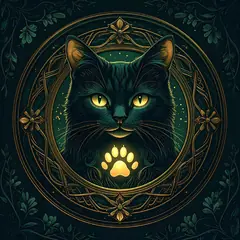
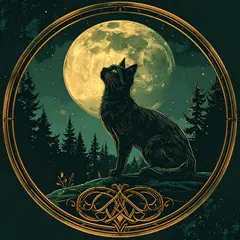
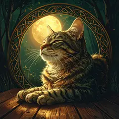
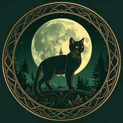
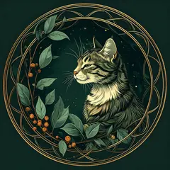
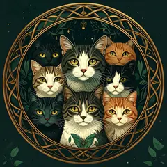
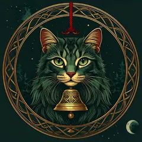

cat number reading
ねこ数字占い
いつも持ちあるく数字には、その人の運のくせが宿る──と森の猫たちはいいます。携帯番号の下4桁を、ひとつずつどうぞ。
猫たちがすきな数字
合計がこの数になる4桁は、森では「えんぎのいい数字」とされています。待ち受けの数字や暗証番号えらびの、おまもりにどうぞ。

8 ─ 肉球のかずまねきよせる数。人もお金も。

11 ─ ぴんとしっぽ直感がさえる数。

15 ─ ひだまり人気とあたたかさの数。

21 ─ てっぺんのぼりつめる数。

24 ─ またたびゆたかさと魅了の数。

31 ─ だいかぞくよい仲間にかこまれる数。

32 ─ ごえんの鈴幸運な出会いをよぶ数。